ガイドと導入仕様_HANS(R)_日本語版
JAF の公式サイトではありません。JAF が公開する PDF を自動変換した非公式の検索用アーカイブです。記載内容は必ず JAF の原本 PDF で出典をご確認ください。 検索と AI 質問つきのビューアで開く
FEDERATION INTERNATIONALE DE L'AUTOMOBILE
Guide and installation specification for HANS®
devices in racing competition
レース競技におけるHANS®装置のガイドと導入仕様
March, 2022
2022年3月
P.2目次
序文 .......................................................................................................................................... 3
1. HANS®の選択 ..................................................................................................................... 3
1.1. HANS®の角度 ............................................................................................................... 3
1.2. HANS®のウイングまたはタブ ......................................................................................... 4
1.3. HANSヨークブラケット ..................................................................................................... 5
2. HANS®装置の準備 .............................................................................................................. 5
2.1. 摩擦ゴム ........................................................................................................................ 5
2.2. パッド付け ...................................................................................................................... 5
2.3. FHRテザーの長さ ........................................................................................................... 6
3. HANS®装置と共に使用するヘルメット ................................................................................... 6
4. 導入 ..................................................................................................................................... 7
4.1. 座席 ................................................................................................................................... 7
4.2. ハーネス ......................................................................................................................... 7
4.2.1. ハーネスの制限 ................................................................................................... 8
4.2.2. 車両への取り付けポイントが5点、6点あるいは7点のハーネス用アジャスターの位置 ..................... 8
4.2.3. 車両への8点または9点の取り付けポイントを持つハーネスのアジャスターの位置 ......................... 9
4.2.4. 車両への 5点、6点、または7点 の取り付けポイントを持つハーネスのショルダーベルトの角度 - 上面図 ........ 10
4.2.5. 5点、6点、または7点の車両への取り付け箇所があるハーネスのショルダーベルトの角度 - 側面図 .............. 10
4.2.6. 車両への8点または9点の取り付け点を持つハーネスのショルダーベルトの角度 - 側面図および上面図 ......... 11
4.3. HANS®を使用したヘッドレストとコックピット周囲 ............................................................ 12
4.4. HANS®を使った車両での避難 ..................................................................................... 12
5. HANS®の寿命 ................................................................................................................... 12
P.3序文前頭部拘束（FHR）装置は、正面衝突または角度のついた正面衝突の際に、ドライバーの頭部を胴体に対して拘束することで、頭部と頸部への負荷を軽減するものである。FHRシステムはさまざまなタイプが認可され、そのうちの1つがHANS®である。本書は、レース競技でHANS®を選択して使用する際に考慮すべき点について、いくつかの基本的なガイドラインを示すことを目的としている。これらのガイドラインはFIAのウェブサイトwww.fia.com のホモロゲーションセクションにあるテクニカルリストNo.29に掲載されているFIA基準8858-2002と8858-2010に基づいて承認されたHANS®に適用される。1. HANS®の選択HANS®装置を選ぶ際には、安全面を考慮する必要がある。さらに、快適性と重量も選択への助けになる。ドライバーは、適切なHANS®デバイスを使用していることを確実にしなければならない。具体的には、HANS®のカラーの角度とHANS®の幅が、着座したポジションとドライバーの身体サイズに適していることが必要である。1.1 HANS®の角度HANS®装置はサイズが異なるだけでなく、ヨーク（運転者の肩と胸に接触するHANS®の一部）とカラー（運転者のヘルメットの後ろに位置するHANS®の一部）の間の角度も異なる。通常、HANS®装置の角度は10°と40°の間で、サイズは小さいものから大きいものまである。着座ポジションや体型については、モータースポーツの活動種類や当該車両に最適なモデルについて、製造元または販売元に相談すること。ハーネスを締めてそのレーシングポジションに着座した場合、HANS®のカラーの角度は水平から60°～90°の間でなければならない（図1と図2を参照）。
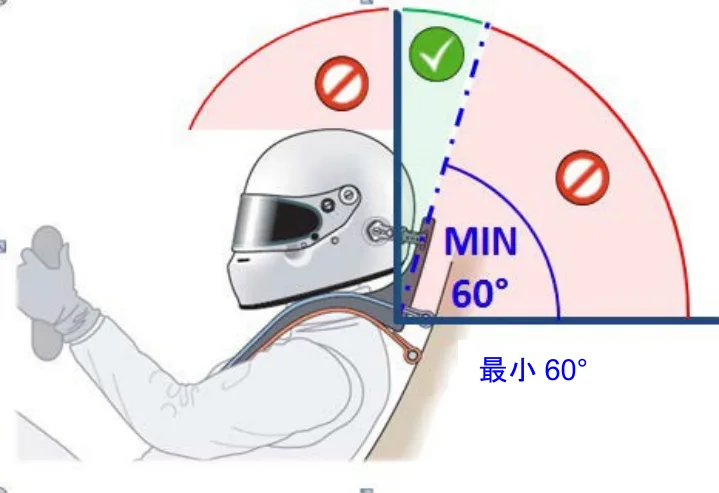
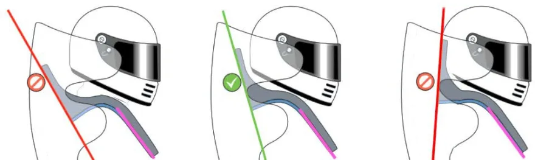
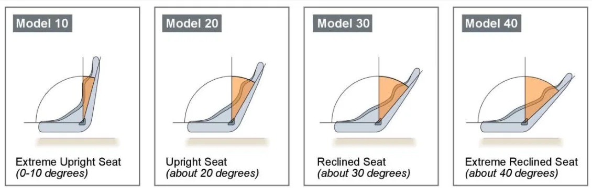
モデル10 極端な直立シート（0~10°）モデル20 直立シート（約20°）モデル30 倒されたシート（約30°）モデル40 極端に倒されたシート（約40°）
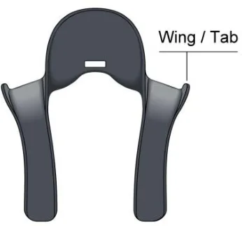
ウイング／タブ図4 ヨークの上面側部に小さなタブがあるHANS®デバイスモデル
P.51.3. ＨＡＮＳヨークブラケットFIAは、ショルダーストラップがHANSヨークから外れるのを防ぐために、HANS®装置の製造者がHANSヨークの下部にブラケットを追加することを許可している（図5参照）（4.2.4項も参照）。このオプションが利用可能なモデルについては、製造元またはサプライヤーに問い合わせること。
![図5 ヨークに小さなブラケットを追加したHANS®装置2. HANS®デバイスの準備HANS®デバイスの本体は絶対に変更してはならないが、HANS®を準備するために考慮することができる点がいくつかある。2.1.摩擦ゴムハーネスベルトと接触するHANSヨークの表面は、ショルダーストラップの下面をグリップするための高摩擦ゴムで覆われていなければならない。摩擦材は取り除かれないこと。ゴム表面の状態を監視されなければならない - 破損、裂け、破れ、またはその他の損傷は認めらない。修理を行う場合は、製造元が推奨し、その指示に厳密に従ってなされなければならない。ゴムの交換が可能な場合、FIAはこの作業を装置の製造者が行うことを強く推奨する。HANS®が塗装されている場合（製造元の指示に従った場合のみ）、ショルダーベルトとの摩擦が損なわれないように、ゴムは完全に覆われてはならない。塗装されたHANS®は、FIA基準8858- 2002と8858-2010の難燃性要件を満たさなければならない。2.2.パッド付けパッド付けは装置とドライバーの間にのみ認められている。ドライバーの身体に接触するHANS®の表面には、快適性のためにパッドを付けることが推奨される。ドライバーとHANSヨークの間に使用されるパッドは、ドライバーが完全な運転装備を身に着け、ハーネスを締めた状態で車両内に着席している場合、厚さが15mmを超えてはならない。パッドは、防炎素材で覆われていなければならず、図6に示すように、防炎素材とパッドは、HANSヨークの両側で幅は8mm以下でなければならない（国際モータースポーツ競技規則付則L項第III章「ドライバーの装備品」の第3.1項を参照）。](assets/fig-p0005-01.webp)
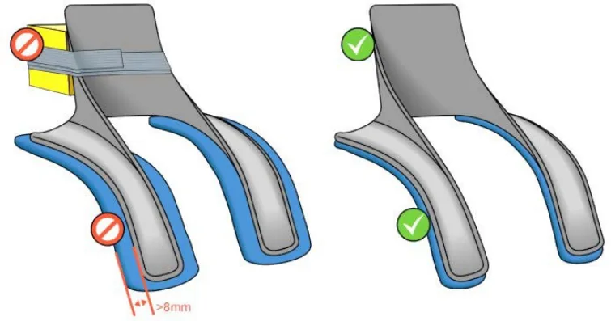
- ドライバーは、HANS®とヘルメットを着用し、安全ハーネスを締めた状態で、通常の運転姿勢で車両内に着席する。- ドライバーは可能な限り体と頭を前に傾ける。この姿勢では、HANSカラーの先端からヘ
ルメットの外側に接続する点までの長さを測定しなければならない。FHRテザー（含複数）の状態は、FHR端部取付け部、クランピングブラケット、およびそれらをHANS® の背面に固定しているネジを含め、注意深く観察しなければならず、摩耗が見られた場合は交換しなければならない。認可されたテザーの端部取付け部そのマーキングの詳細については、FIAテクニカルリスト29を参照のこと。3. HANS®装置と共に使用するヘルメットFIA基準8858-2002、8858-2010、8860-2010、8860-2018または8859-2015に準拠したFIA公認ヘルメットが必要とされる。FHR使用（HANS®使用を含む）が承認されたヘルメットの全リストについては、FIAテクニカルリストNo.33、41、49および69を参照のこと。FIAラベル8858-2002または8858-2010が付いたヘルメットは、スネルステッカーも付いている場合のみ有効である。そのため、スネルの有効な認証を受けたヘルメットのみが認められる。以下の日付を考慮することが重要である： FIA基準8858-2002または8858-2010に基づいて承認されたヘルメットは、スネル認証に関わらず2023年12月31日以降は無効となる。HANS®装置は常にヘルメットと一緒に使用され、適切に装着されていなければならない（FHRのテザー端部取付け部はヘルメットおよびシートベルト下のHANSヨークにクリップで留められる）。
P.7従って、例えばラリーのリエゾン・セクションなど、ヘルメットを着用していない場合はいつでも、HANS®もまた取り外される。4.導入4.1.座席HANS®をサルーンカーで使用する場合は、FIA基準8855-1999、8855-2021または8862-2009に従って公認された安全シートを使用しなければならない。この場合、ショルダーストラップが座席のショルダースロットの間で自由に動くことを確認することが重要である。そのため、図7に示すように、ベルトストラップをスロット内で中央に配置し、スロットの端に触れないようにすることが推奨される。
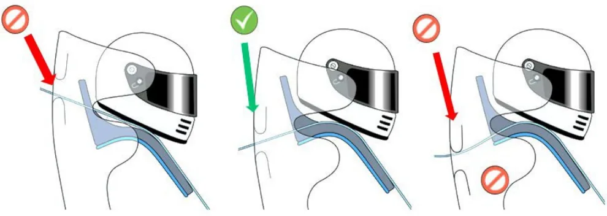
P.8バックルの位置は、2022年FIA国際モータースポーツ競技規則付則J項第253条6項2で規定されている。以下、関連規定の抜粋を参照のこと。「第253条6項 安全ベルト・・・腰部ストラップは骨盤の隆起部と上部の腿の間の屈曲部にしっかりと密着していなければならない。いかなる場合でも、それらは腹部に着用されるものであってはならない。」チームによっては、ショルダーベルトをシートの横に移動させるために、ゴム紐をショルダーベルトに装着する傾向がある。しかし、これはショルダーベルトを横に移動させてしまうため、ベルトがHANSヨークから出てしまうことになる。競技者は、ゴム紐をショルダーベルトに決して装着してはならない。4.2.1. ハーネスの制限HANS®装置は、幅が最低70mmの標準的なショルダーストラップと共に公認されたハーネスモデル、さらに幅が最低44mmの特定のショルダーストラップと共に公認されたハーネスモデルで、「FHR専用」または「HANS®専用」と表示されているモデルに使用することができる。FIA公認のダブルショルダーベルトシステムも認められている。ダブルショルダーベルトシステムは、左右各肩に2本のストラップが付いたセーフティハーネスシステムである。ドライバーの肩（HANS®の下）に装着される1本のボディベルトと、HANS®のヨークに装着される2本目のHANSベルト（標準的なHANS®の使用方法と同様）がある。HANSベルトは、少なくともボディベルトと同じくらいの締め付けであることが重要である。ダブルベルトシステムの例を図9に示す。
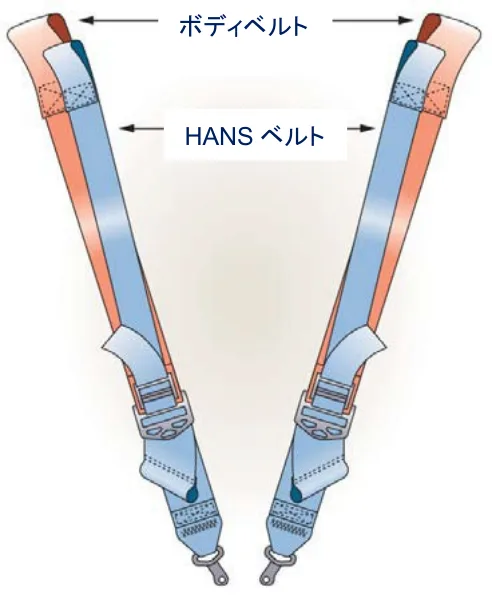
P.9ショルダーベルトの長さ調整装置が、HANSヨークとバックルの間にある場合、その長さ調整装置は、HANSヨークよりも、少なくとも25mmは低くなければならない。
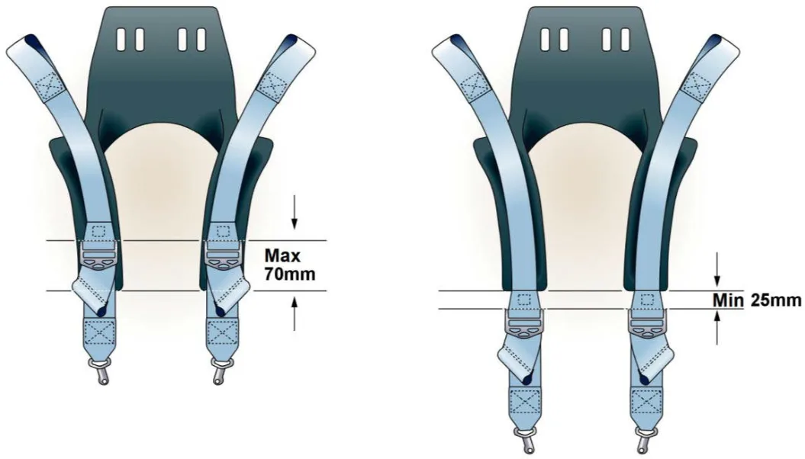
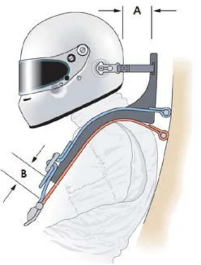
- 運転者は、HANS®とヘルメットを着用し、安全ハーネスを締めた状態で、通常の運転ポジションに車両内に着席する。- 運転者は可能な限り体と頭を前に傾ける - この姿勢で、HANSカラーの前面からヘルメ
ットの最後部までの水平距離を測定する（距離A）。- 最小距離B = 100mm - 距離A。
P.104.2.4. 車両への 5点、6点、または7点 の取り付けポイントを持つハーネスのショルダーベルトの角度 - 上面図車両のショルダーベルトの固定位置は、運転席の中心の線に対し左右対称になるようにすること。上から見た場合、ベルト間の角度は、図12に示すように約20°～25°の範囲であることが推奨され、決して10°～25°の範囲外にならないようにすること。必要に応じて、ベルトが接触したり、ベルト同士が交差していても構わない。ショルダーストラップの固定部が横方向にスライドしないようにすることが重要である。
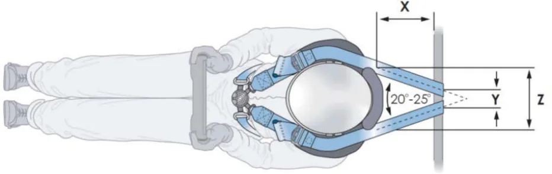
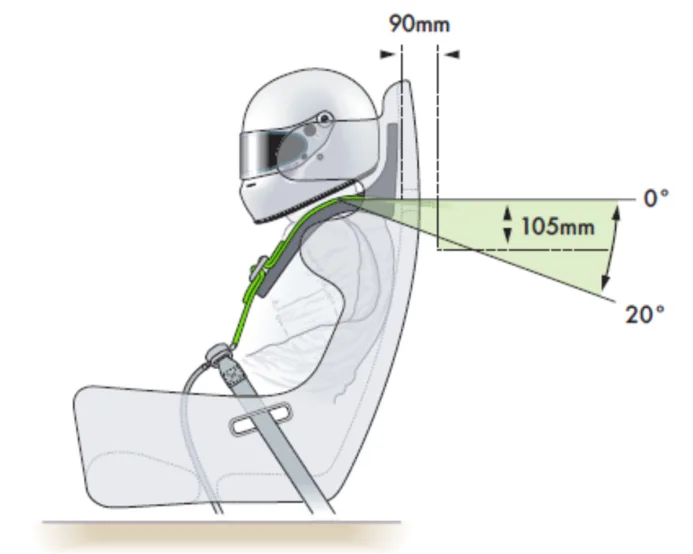
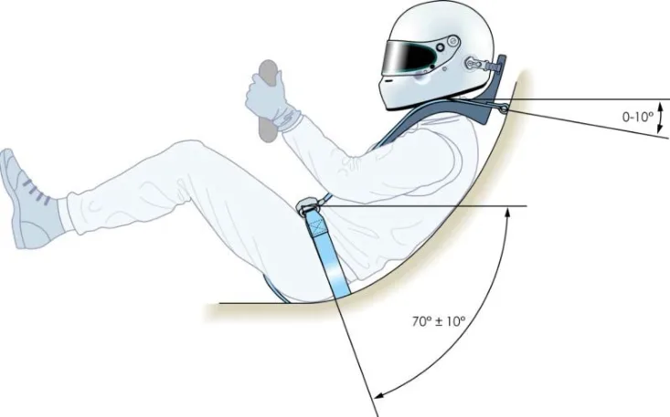
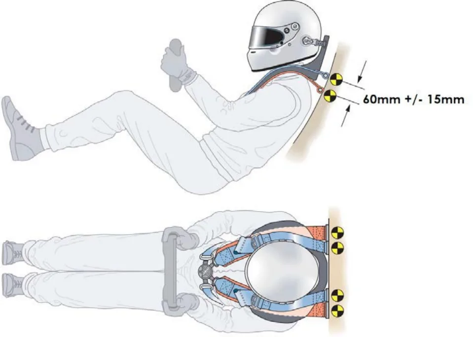
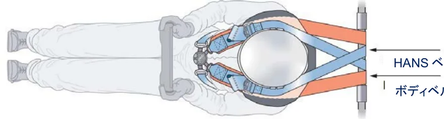
HANS ベルト
図 16 (X = > 200mm) の車両への HANS ダブルベルトの取り付けどちらの場合（X <200mmおよびX> 200mm）でも、HANSベルトは、4.2.4項で定義されているように取り付けなけれならない。HANSベルトとボディベルトが同じロールケージパイプに取り付けられている場合、HANSベルトは4.2.4項で定義されているように取り付け、図16に示すように、ボディベルトの内側のパイプに取り付けなければならない。例外的に、ボディベルトは、これに対応するために必要であれば、互いに平行になるまで、ただし発散しないように、より大きな寸法Ｙで取り付けてもよい。4.3. HANS®を使用したヘッドレストとコックピット周囲リアヘッドレストとの適合性を確保するためには、HANS®の後部とシートバック隔壁またはシートの頂部との間に十分な隙間が必要である。ドライバーが着用するHANS®は、通常の運転ポジションに着座した状態で、一切の車両の構造的な部分から25mm以上離れていること。4.4. HANS®を使った車両での避難レース用の装備（レースウェア、ステアリングホイール、ラジオシステム、該当する場合はドリンクシステムを含む）を完全に装着した状態で、車両からの迅速な避難を練習することが不可欠である。これは事故の際の緊急避難を成功させるのに役立つ。5. HANS®の寿命HANS®のメンテナンスについては、常にその製造者の指示に従うこと。正面からの衝撃やヨー角が45°までの正面からの衝撃の後は、テザーを交換しなければならず、あるいは摩耗が見られた場合は早めに交換をしなければならない。HANS®に負荷がかかるような激しい衝撃を受けた後は、ヘルメットとHANS®を点検することが推奨される。ヘルメットやHANS®が、それほど深刻でない衝撃でも損傷を受けていないかどうかを判断するために、それぞれの製造者が検査サービスを提供している場合がある。推定衝撃速度が時速50km以上の正面衝突または斜め前方衝突であれば、事故は重度のものとみなされる。